Creating Fake Depth of Field
1: Abstract
There are people in everyday life who has a creative eye for photography, but who do not have enough money to purchase and maintain professional photography equipment. This manual will reflect on how to use regular camera and software in combination to bring the best out of the everyday simple photographers. In this user manual you will learn,
- Introduction to fake depth of field
- The introduction to the tools which will be used
- How to create the fake depth of field
2: Purpose
One of the hardest things with a regular phone camera is to focus on a specified spot. To overcome this, you can take the same exact picture and then use this manual to obtain the same effect you desire by using Adobe Photoshop's tools, which is also known as creating the fake depth of field.
3: Introduction to Fake Depth of Field
When you use a professional camera which can perform manual focusing to focus on an object and take a picture you can see that there is an effect. You can see that everything else but the element you focused is blurred out.
This effect can be used to emphasize what you are really focusing on if you have a high detailed background around the element. But when you don't have a camera that can do a better job like a professional camera you can use the tools in Adobe Photoshop to give the same effect to a picture which does not have a single element focused sharply. Performing that is called creating a fake depth of field in a picture.

4: Introduction to the tools which will be used
In this user manual you will be using Adobe Photoshop as the main software. You are expected to have basic knowledge about the software and any version above Adobe Photoshop 6.0 is needed to follow this user manual. The following tools in Adobe Photoshop will be used.
-
The Gaussian Blur tool [Or Lens Blur tool can be used too.]
This tool will blur the selected layer. -
The Mask tool
This tool will be used to select the parts of the layer where we need the blur effect. -
The Gradient tool
This tool will be used with the Mask tool to mask a selected area of the layer.
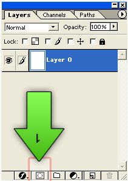
The Mask tool
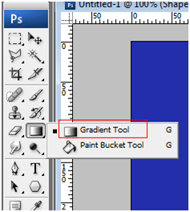
The Gradient tool
5: Creating the Fake Depth of Field
From here on you can follow the steps below and see how it is done. After that you can do your testing rounds to see how this can be applied to other pictures at you preference.
The Original Photograph
The original image
The final result
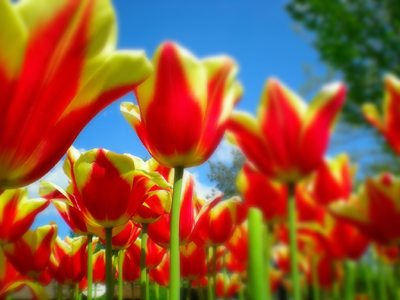
The final result after editing.
Step one
Duplicate the layer
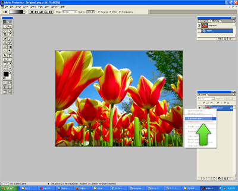
Figure 1
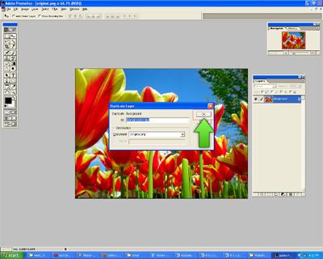
Figure 2
Step two
Applying the 'Blur' filter to the duplicated layer.
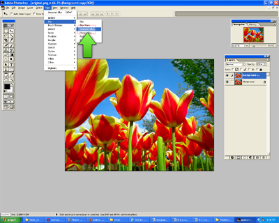
Figure 5
Set the radius to 6.0 for the blur effect.
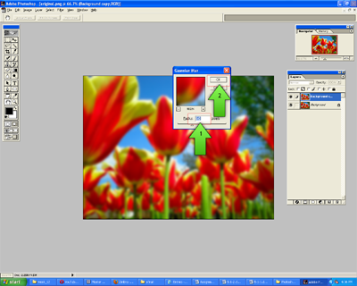
Figure 6
Step three
Apply the 'Mask' to the duplicated layer.
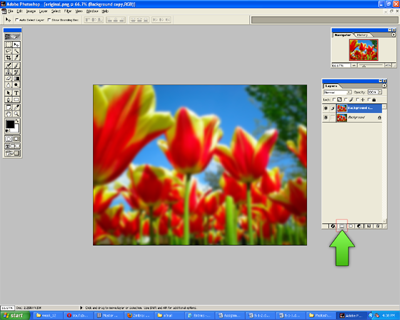
Figure 7
After you add the Mask to the layer it should show a white box to the right side of the layer as in the figure below,
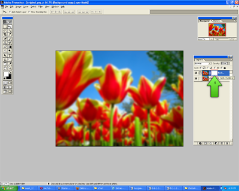
Figure 8
Step four
Use the Gradient Tool to mask out the desired selection of the layer.
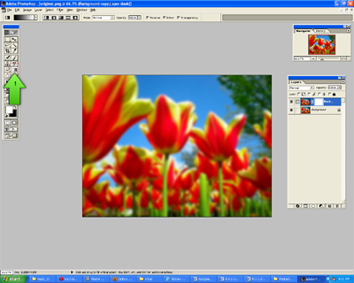
Figure 9
Make sure the gradient is from Black to white before continuing.
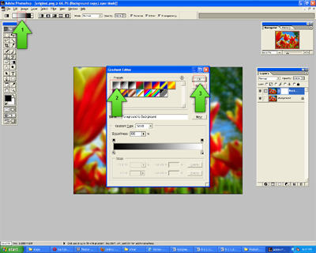
Figure 10
After selecting the Gradient tool and the correct color gradient select the style you want to apply the gradient. For this example 'Radial' will be used. Then Click on the element which you want to focus and drag the mouse over the image halfway.
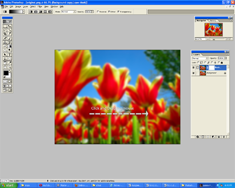
Figure 11
The final result
After going through the above steps, this will be the final result.
Figure 12
6: References
s Pantherinia_hd (2008). Standing up... in full color !. Retrieved July 20, 2010 fromhttp://www.flickr.com/photos/9426538@N07/2550341393/sizes/l/
Patterson, S. (2010). Easy depth of field effect in photoshop. Retrieved July 08, 2010
from http://www.photoshopessentials.com/photo-effects/depth-of-field/
Pucca Loves Photography (2009). Pucca loves photography Retrieved July 08, 2010
from http://www.flickr.com/photos/tetsumo/3598583611/
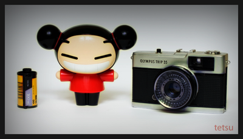
Love Photography!!!